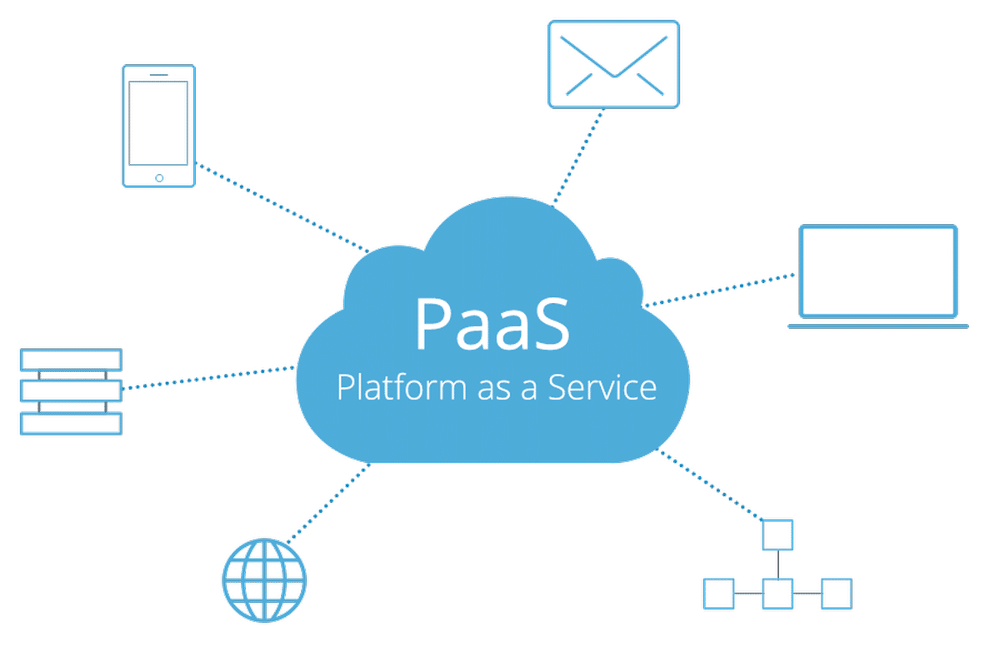

Computação em nuvem é um modelo de computação que permite o acesso a recursos computacionais, como armazenamento, processamento e redes, de forma remota, por meio da internet. Em vez de ter servidores físicos ou dispositivos de armazenamento local, os recursos são disponibilizados por meio de provedores de serviços em nuvem, como a Amazon Web Services (AWS), Google Cloud Platform (GCP) e Microsoft Azure.
Existem três principais modelos de serviço em nuvem :
A computação em nuvem oferece diversos benefícios, como escalabilidade, flexibilidade, eficiência e redução de custos operacionais. Essa tecnologia tem sido amplamente adotada por empresas de todos os tamanhos e setores para melhorar a agilidade, inovação e competitividade no mercado.
A computação em nuvem oferece uma série de benefícios significativos, como a flexibilidade de dimensionamento dos recursos de computação de acordo com a demanda, o que permite às empresas economizar em custos operacionais e de capital. Além disso, a computação em nuvem proporciona maior acessibilidade aos dados e aplicativos, permitindo que equipes distribuídas colaborem de forma mais eficaz.
A segurança é uma preocupação comum, mas os provedores de serviços em nuvem geralmente implementam medidas de segurança avançadas, muitas vezes superiores às que as empresas poderiam implementar por conta própria. A alta disponibilidade e a redundância dos serviços em nuvem garantem a continuidade dos negócios, mesmo em caso de falha de hardware.
No entanto, a dependência de uma conexão com a internet pode ser um obstáculo, especialmente em áreas com conectividade instável. Além disso, os custos a longo prazo podem aumentar à medida que uma empresa expande seu uso de serviços em nuvem e consome mais recursos. A falta de controle total sobre a infraestrutura também pode limitar a personalização e a integração com sistemas existentes. Apesar desses desafios, a computação em nuvem continua sendo uma opção atraente para muitas empresas devido aos seus benefícios em termos de flexibilidade, eficiência e escalabilidade..
Amazon Web Services (AWS): A AWS é uma das maiores provedoras de serviços em nuvem do mundo, oferecendo uma ampla gama de serviços, incluindo computação, armazenamento, banco de dados, análise, machine learning e muito mais.
Microsoft Azure: O Azure é a plataforma de computação em nuvem da Microsoft, que oferece serviços semelhantes à AWS, incluindo computação, armazenamento, análise e desenvolvimento de aplicativos.
Google Cloud Platform (GCP): O GCP é a plataforma de computação em nuvem do Google, oferecendo serviços como computação, armazenamento, banco de dados, machine learning e análise de dados.
IBM Cloud: A IBM oferece uma ampla gama de serviços em nuvem, incluindo computação, armazenamento, banco de dados, inteligência artificial e blockchain.
Oracle Cloud: A Oracle oferece serviços em nuvem para computação, armazenamento, banco de dados e aplicativos empresariais.
Essas são apenas algumas das principais empresas de computação em nuvem, e o mercado continua a evoluir com o surgimento de novos players e a expansão dos serviços oferecidos pelas empresas existentes.
A computação em nuvem é um modelo de prestação de serviços de TI pela internet, oferecendo escalabilidade, flexibilidade e eficiência. Seus principais benefícios incluem redução de custos, agilidade e acesso remoto, mas há preocupações com segurança, dependência de internet e custos a longo prazo. Apesar dos desafios, a computação em nuvem é amplamente adotada por sua capacidade de melhorar a eficiência operacional e a competitividade das empresas.
O IaaS (Infrastructure as a Service) é um modelo de computação em nuvem que oferece uma ampla gama de recursos de infraestrutura de TI de forma virtualizada pela internet. Isso inclui servidores virtuais, armazenamento, redes e outros recursos essenciais para operações de TI. Com o IaaS, as empresas podem alugar esses recursos de provedores de serviços em nuvem, como a Amazon Web Services (AWS), Google Cloud Platform (GCP) e Microsoft Azure, em vez de adquirir e manter hardware físico em suas próprias instalações.
Uma das principais vantagens do IaaS é a escalabilidade, permitindo que as empresas aumentem ou diminuam seus recursos de computação de acordo com a demanda, sem a necessidade de investir em hardware adicional. Isso proporciona flexibilidade operacional e economia de custos, já que os recursos são pagos apenas quando são utilizados.
Além disso, o IaaS oferece alta disponibilidade e redundância, garantindo que os serviços estejam sempre disponíveis. Os provedores de IaaS também cuidam da manutenção e atualização da infraestrutura, permitindo que as empresas se concentrem em suas operações principais.
No entanto, o IaaS também apresenta alguns desafios, como questões de segurança e conformidade, especialmente em setores regulamentados. Apesar desses desafios, o IaaS continua sendo uma opção atraente para muitas empresas devido à sua flexibilidade, escalabilidade e eficiência operacional.
PaaS (Platform as a Service) é um modelo de computação em nuvem que oferece uma plataforma completa para desenvolver, executar e administrar aplicativos sem precisar manter infraestrutura própria. Os clientes geralmente pagam pelo uso dos recursos, como tempo de CPU e armazenamento, e podem acessar suas ferramentas de programação de qualquer lugar. A empresa de PaaS cuida da infraestrutura, incluindo sistemas operacionais, servidores e armazenamento, simplificando o processo de desenvolvimento e manutenção de aplicativos. Isso permite que as equipes de desenvolvimento se concentrem mais no desenvolvimento de aplicativos e menos na infraestrutura subjacente. Além disso, o PaaS oferece escalabilidade e flexibilidade, permitindo que os desenvolvedores aumentem ou diminuam os recursos conforme necessário. Em resumo, o PaaS é uma solução eficaz para empresas que desejam desenvolver e implantar aplicativos de forma rápida e eficiente, sem os custos e complexidades associados à infraestrutura de TI tradicional.

O Software como Serviço (SaaS) é um modelo de distribuição de software em que o aplicativo é hospedado por um provedor de serviços e disponibilizado aos clientes pela internet. Os clientes acessam o software por meio de um navegador da web, em vez de instalá-lo em seus dispositivos. Isso elimina a necessidade de comprar, instalar e manter o software localmente, o que pode ser caro e trabalhoso.
O SaaS oferece várias vantagens em relação aos modelos tradicionais de software. Por exemplo, ele permite que as empresas acessem software sofisticado sem precisar investir em hardware caro. Além disso, o modelo de assinatura do SaaS geralmente inclui atualizações automáticas e suporte técnico, o que facilita a manutenção do software atualizado e funcionando sem problemas.
Outra vantagem do SaaS é a escalabilidade. As empresas podem facilmente aumentar ou diminuir o número de usuários ou recursos conforme necessário, sem precisar investir em hardware adicional. Isso permite que as empresas sejam mais ágeis e respondam melhor às mudanças nas demandas do mercado.

.png)